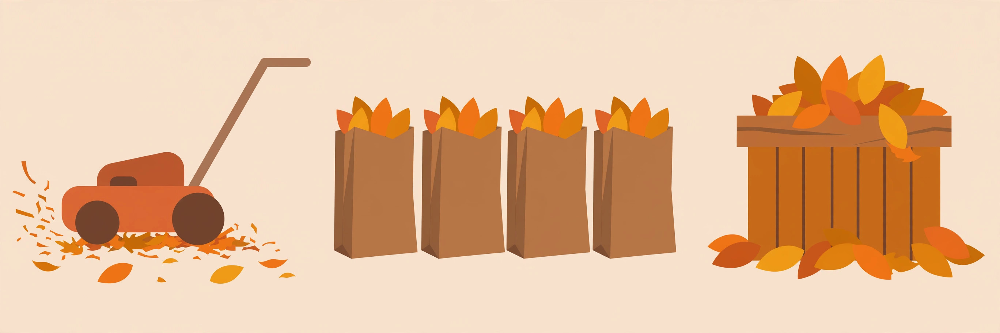

Your leaf strategy: mulch, bag, or compost

Leaves are the bulk of fall yard work, and the method you choose changes how many hours it costs you. There's no single right answer — it depends on how many trees you have, what kind, and how you feel about spending Saturdays bagging. Here are the four real options, honestly compared.
Option 1: Mulch-mowing (the easiest for most people)
Run your mower over the leaves with the deck set a notch higher than your normal cut. A standard blade chops dry leaves into confetti-sized pieces that sift down between the grass blades and decompose over winter, feeding the soil. It takes about as long as a regular mow.
- Best for: moderate leaf cover — you can still see some grass through the leaves.
- When it fails: if the leaves are ankle-deep, the mower chokes and leaves clumps. Mow more often (once a week at peak drop) or rake the excess first.
- Tips: dry leaves mulch far better than wet ones, so mow on a dry afternoon. A dedicated mulching blade helps but isn't required — any sharp blade works.
Option 2: Bagging (clean look, more work)
Rake or blow leaves into piles, bag them, and haul them off. This gives the cleanest result and is the right call if you have very heavy leaf cover or wet, matted leaves that won't mulch.
- Bag rules vary. Many municipalities require paper yard-waste bags, have size or weight limits, or only collect on specific weeks. Check your town's waste page before you buy bags — plastic bags are rejected in many programs.
- Work smarter: rake leaves onto a tarp and drag the tarp to the curb or bag station instead of making many small piles. A leaf blower earns its price on a large yard.
⚠ Leaf-burning warnings. Some areas allow burning leaves, many don't — and rules can change by season, wind conditions, or burn bans. Never burn within the rules you haven't checked: call your local fire department or check the municipal website first. If burning is allowed, keep fires small, far from structures, attended at all times, and have water on hand. When in doubt, don't.
Option 3: Composting (turn leaves into free soil)
Leaves are "browns" — the carbon side of compost — and a yard full of them is free raw material. A simple pile or bin of leaves breaks down into leaf mold over about a year, and you can speed it up by shredding them first (a mower pass counts) and mixing in some nitrogen like grass clippings or kitchen scraps.
- Leaf mold: even without any fuss, a pile of damp leaves in a corner decomposes into excellent soil amendment. It just takes longer.
- Don't compost leaves from trees with persistent allelopathic tendencies (black walnut is the classic example) unless you've researched it, and skip diseased leaves — compost piles at home rarely get hot enough to kill plant diseases.
Option 4: Curb programs and vacuuming services
Many towns run curbside leaf collection in fall — you rake or blow leaves to the curb and a vacuum truck collects them. Details vary widely: some towns want loose piles at the curb, others require bags, and schedules range from weekly to a single pass. Check your municipality's fall schedule early in the season, because the truck does not wait.
How to actually decide
A few honest questions:
- Few trees, scattered leaves? Mulch-mow and forget it. This is the least work and genuinely good for the lawn.
- One or two big trees? Mulch-mow weekly at peak drop; bag the beds and the spots where leaves smother the grass.
- A yard full of mature trees? Combine: mulch-mow what you can, blow the rest to the curb for municipal pickup, or bag in stages. Don't try to bag everything in one heroic weekend.
- Want the garden payoff? Compost or make leaf mold — free soil next year.
The mistake to avoid: leaving a thick, wet mat of whole leaves on the grass all winter. It blocks light and air, invites snow mold and voles, and you'll be staring at dead patches in April. Even a single pass with the mower is better than nothing.
Whatever method you pick, the rhythm matters more than the method: little and often through October and November beats one exhausting cleanup in December — and the freeze won't wait for you to finish.